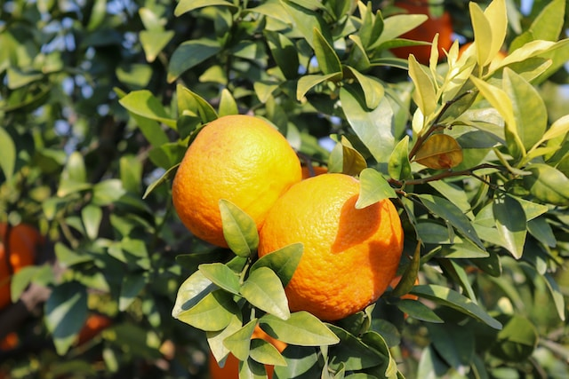

会社案内
代表ご挨拶
Greeting
「遊びが足りないから仕事ができないんだ。遊べよ！
そうすれば、もっと仕事ができるようになる」
私は常日頃から社員たちに話していることです。
これはペンシルベニア大学で学んだ多くの学術の中でもっとも
感銘を受けたのはドイツのビジネスに対する考え方です。
仕事は量ではなく、仕事の質を重視します。
やることをしっかりやっていれば周りは何も言わないのです。
そして社風としても社員の大切なプライベートな時間を削った
勤務後の飲み会などは開催しません。
それなら、金曜日の午後は早めに仕事を切り上げて職場で提供
されるビールやドリンクを少し飲みながら、その場で同僚と雑
談をしたり、情報交換をしたりします。
社員に負担のかからない関係構築の場を作りたいのです。
■経歴
・1988年ペンシルベニア大学 経営学部 卒業後
「Ctree-Farm株式会社」入社。
・経営企画室長やみかん商品開発部長を経て
2002年に代表取締役 社長に就任。
■座右の銘
・強い者が勝つのではない。勝った者が強いのだ！
- 代表取締役社長
- 楠 良樹
会社概要
Outline
| 会社名 | Ctree-Farm株式会社 |
|---|---|
| 所在地 | 〒640-8033 和歌山県和歌山市本町1丁目1 |
| 設立 | 1950年(昭和25年) 5月 |
| 代表者 | 代表取締役社長 楠 良樹 |
| 資本金 | 500万円 |
| 従業員数 | 単体:500名 ※出向者含まず 連結:1200名 (2023年3月31日) |
| 事業内容 |
・みかん農園 ・みかん食品製造 / 販売 ・みかん化粧品製造 / 販売 |
| 連結売上高 | 1600万円 (2023年3月期) |
沿革
History
-

1950年
和歌山県有田市郊外に「楠みかん農園」を設立
-
1954年
和歌山県市内に「楠みかん販売所」をオープン
-
1960年
和歌山県市内に「みかん商品研究所」を設立
-
1962年
和歌山県紀の川市に「楠みかん販売所２号店」をオープン
-
1964年
東京オリンピックでミカンジュースを提供したことが話題となり全国から注文が殺到し、みかんブームが到来する。
-
1965年
「楠みかん株式会社」に社名を変更する。
-
1967年
大阪証券取引所市場第二部に上場。
-
1972年
創業者「楠 市之助」死去。二代目代表に「楠 聡一」が就任。
-
1973年
東京証券取引所市場第二部に上場。
-
1976年
箱根駅伝の大会協賛社になることを発表。
-
1979年
さらなる業務拡大を目指し、「根来コンピュータ㊒」「㈱canba化粧品」「モリモト工業㈱」「㈲山田果物店」「竹本石鹸株式会社」の5社と合併し、「Ctree-Farm株式会社」を設立。
-
1980年
みかんを使った生石鹸や化粧品の販売を開始。
-
1984年
販売店を全国展開するため、本社を東京都銀座に移転。
-
1988年
メインバンクを紀陽銀行からみずほ銀行に変更。
-
1990年
東京証券取引所市場第一部に上場。大阪証券取引所市場第一部に上場。
-
1992年
「楠 聡一」氏が会長に就任し「根来 和男」氏を社長に「神場 真理子」氏を副社長に指名。
-
1998年
女優の「藤原 紀香」さんをイメージガールに起用し、みかん化粧品が美容ブームを巻き起こす。
-
2001年
[不正融資事件] グループ会社の売上などを計上して決算書を粉飾し、みずほ銀行から融資金約2億円を詐取したとして、根来社長と神場副社長ら2名が東京地検特捜部に逮捕された。 余罪は20億円を超える。
-
2002年
新社長に「楠 良樹」氏が就任。
-
2005年
不況により、部門を縮小して本社を和歌山市に移転。
-
2011年
[労働基準法違反] 和歌山労働基準監督署は労働基準法の賃金台帳へ労働時間未記入の容疑で楠社長を大阪地方検察庁に書類送検。大阪高等裁判所は第3刑事部が懲役3年執行猶予5年の判決を出した。
-
2012年
業務改善命令を受け、全業務を見直す。
-
2019年
新型コロナウイルスの影響を受け、すべての販売所を閉鎖。受注生産販売にて業務展開。
-
2021年
東京オリンピックでスポンサーシップを活用してマーケティング展開。新商品「俺んちのオレンジ石鹸」を発表し注文が殺到する。
-
2023年
ECサイトを使った通販部門を開設。